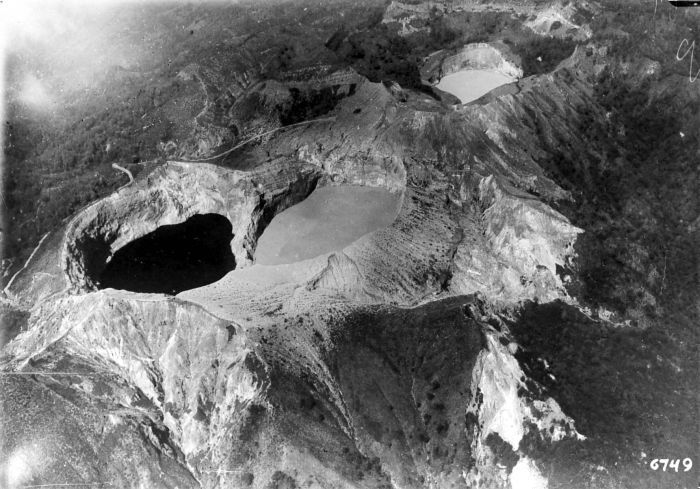

Danau Kelimutu
Post by Adytia, Sunday 06 Juny 2018
Mengenal Danau Kelimutu
Gunung Kelimutu adalah gunung berapi yang terletak di Pulau Flores, Provinsi NTT, Indonesia. Lokasi gunung ini tepatnya di Desa Pemo, Kecamatan Kelimutu, Kabupaten Ende. Gunung ini memiliki tiga buah danau kawah di puncaknya. Danau ini dikenal dengan nama Danau Tiga Warna karena memiliki tiga warna yang berbeda, yaitu merah, biru, dan putih. Walaupun begitu, warna-warna tersebut selalu berubah-ubah seiring dengan perjalanan waktu.Kelimutu merupakan gabungan kata dari "keli" yang berarti gunung dan kata "mutu" yang berarti mendidih. Menurut kepercayaan penduduk setempat, warna-warna pada danau Kelimutu memiliki arti masing-masing dan memiliki kekuatan alam yang sangat dahsyat.Danau atau Tiwu Kelimutu di bagi atas tiga bagian yang sesuai dengan warna - warna yang ada di dalam danau. Danau berwarna biru atau "Tiwu Nuwa Muri Koo Fai" merupakan tempat berkumpulnya jiwa-jiwa muda-mudi yang telah meninggal. Danau yang berwarna merah atau "Tiwu Ata Polo" merupakan tempat berkumpulnya jiwa-jiwa orang yang telah meninggal dan selama ia hidup selalu melakukan kejahatan/tenung. Sedangkan danau berwarna putih atau "Tiwu Ata Mbupu" merupakan tempat berkumpulnya jiwa-jiwa orang tua yang telah meninggal.Para penduduk di sekitar Danau Kelimutu percaya, bahwa pada saat danau berubah warna, mereka harus memberikan sesajen bagi arwah orang - orang yang telah meninggal.Luas ketiga danau itu sekitar 1.051.000 meter persegi dengan volume air 1.292 juta meter kubik. Batas antar danau adalah dinding batu sempit yang mudah longsor. Dinding ini sangat terjal dengan sudut kemiringan 70 derajat. Ketinggian dinding danau berkisar antara 50 sampai 150 meter.

Sejarah Danau Kelimutu
Awal mulanya daerah ini diketemukan oleh orang lio Van Such Telen, warga negara Bapak Belanda Mama Lio , tahun 1915. Keindahannya dikenal luas setelah Y. Bouman melukiskan dalam tulisannya tahun 1929.
Sejak saat itu wisatawan asing mulai datang menikmati danau yang dikenal angker bagi masyarakat setempat. Mereka yang datang bukan hanya pencinta keindahan, tetapi juga peneliti yang ingin tahu kejadian alam yang amat langka itu juga.Kawasan Kelimutu telah ditetapkan menjadi Kawasan Konservasi Alam Nasional sejak 26 Februari 1992.
Sumber : https://id.wikipedia.org/wiki/Gunung_Kelimutu